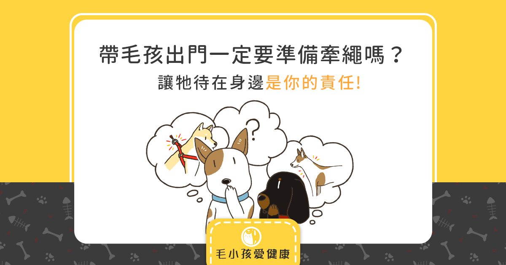

帶毛孩出門一定要準備牽繩嗎？讓牠待在身邊是你的責任 2019-12-12 2019-12-12 作者 Ana  假日走在公園裡，總是會看到許多主人帶著毛孩出來散步、活動。 你會發現有的毛孩有主人繫著牽繩，有的毛孩卻沒有。、 … Read more
貓咪有需要洗澡嗎？真相原來是這樣 2019-12-10 2019-12-10 作者 Ana 「貓咪沒有出門、又不會髒、不會臭，所以不用洗澡拉！」 身為貓奴的你，是否總是對「貓洗澡」感到又疑惑、 … Read more
皮膚毛髮保健：顏值不是天生！你家貓狗也能變明星！ 2019-12-042019-12-03 作者 Ana 為什麼有些狗狗、貓貓的毛髮總是亮麗動人？彷彿童話故事的百雪公主、輕步雲霄的飄逸飛仙？迎風吹來，總是楚楚可愛。就 … Read more
心理測驗：狗狗眼中的你！？ 2019-11-222019-11-22 作者 Ana 『你問我愛你有多深？我愛你有幾分？』 你會好奇嗎？自己在狗狗的心目中，你是什麼形象？ 是愛到入骨的情人？還是只 … Read more